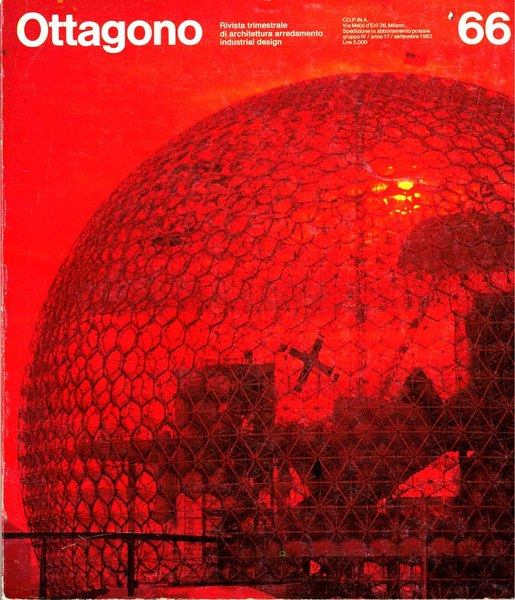
CRVI000837Ottagono - Ottagono 66
settembre 1982 · anno 17 · 1982
settembre 1982 · anno 17 · 1982
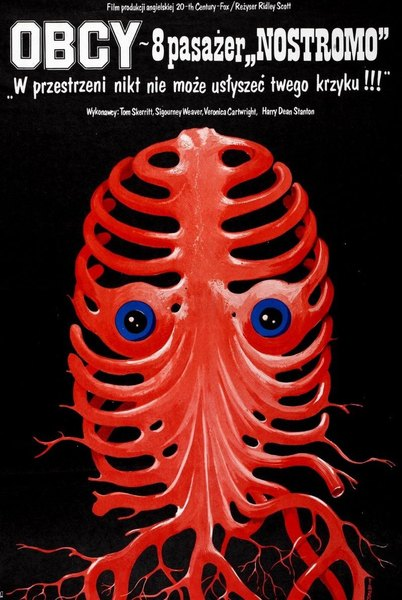
CRVI000762Jakub Erol - Obcy — 8 pasażer „Nostromo”
Alien · Polish film poster · 1980
Alien · Polish film poster · 1980

CRVI000039Música Esporádica - Música Esporádica
Designed by Música Esporádica · Grabaciones Accidentales · 1985
Designed by Música Esporádica · Grabaciones Accidentales · 1985

CRVI000122Shigeo Fukuda - [Poster: figure walking through a red spiral, LOOK series]
Title not established
Title not established
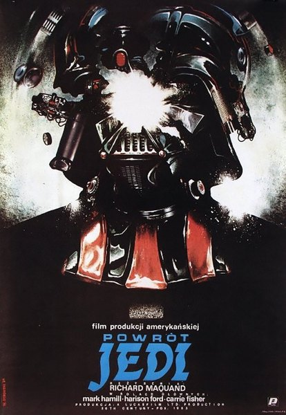
CRVI000760Witold Dybowski - Powrót Jedi
Return of the Jedi · Polish release poster · 1984
Return of the Jedi · Polish release poster · 1984

CRVI000408G.L.O.B.E. & Whiz Kid - Play That Beat Mr. D.J.
Designer unknown · Tommy Boy · 1983
Designer unknown · Tommy Boy · 1983

CRVI000253Lex Drewinski - Investigation Proved
Film Poster Designed By Lex Drewinski · 1983 · 1983
Film Poster Designed By Lex Drewinski · 1983 · 1983

CRVI000159Kazumasa Nagai - JIDA 30th Anniversary Program
Designed by Kazumasa Nagai · 1982
Designed by Kazumasa Nagai · 1982

CRVI001043Kiyoshi Awazu - Contemporary Print Exhibition, 50 Earlham Street Gallery, London
Poster · 1981
Poster · 1981

CRVI000840Ottagono - Ottagono 70
settembre 1983 · anno 18 · 1983
settembre 1983 · anno 18 · 1983

CRVI000410UTFO - UTFO
Designer unknown · Selecf · 1985
Designer unknown · Selecf · 1985

CRVI000761Waldemar Świerzy - Czas apokalipsy
Apocalypse Now · Polish film poster · 1981
Apocalypse Now · Polish film poster · 1981
CRVI000605Unknown - What Would Freud Think?
New York, March 31, 1986 · 1986
New York, March 31, 1986 · 1986

CRVI000784Ivan Chermayeff - By the Sword Divided
Mobil Masterpiece Theatre · 1986
Mobil Masterpiece Theatre · 1986
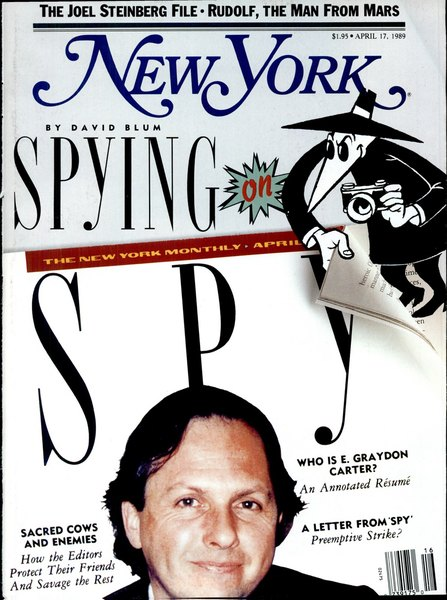
CRVI000607Unknown - Spying on Spy
New York, April 17, 1989 · 1989
New York, April 17, 1989 · 1989

CRVI000371The Neville Brothers - Fiyo On The Bayou
Designer unknown · ASM · 1981
Designer unknown · ASM · 1981

CRVI001108Martin Wong - Portrait of Mikey Piñero at Ridge Street and Stanton
Acrylic on canvas, 72 × 72 in · also titled “La Vera de Nuyorico: Miguel Piñero” · 1985
Acrylic on canvas, 72 × 72 in · also titled “La Vera de Nuyorico: Miguel Piñero” · 1985

CRVI000252Lech Majewski - Ras le cœur
Film Poster Designed By Lech Majewski · 1980 · 1980
Film Poster Designed By Lech Majewski · 1980 · 1980
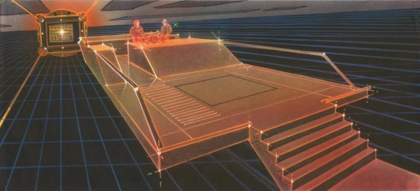
CRVI001344unattributed - Tron — the Solar Sailer deck, film still
Photographer unidentified · 1982
Photographer unidentified · 1982

CRVI001107Martin Wong - Psychiatrists Testify: Demon Dogs Drive Man to Murder
Acrylic on canvas, 36 × 48 in · also titled “Demon Dogs Drive Man to Murder” · 1980
Acrylic on canvas, 36 × 48 in · also titled “Demon Dogs Drive Man to Murder” · 1980

CRVI000369The Deele - Eyes Of A Stranger
Designer unknown · Solar · 1987
Designer unknown · Solar · 1987

CRVI00004023 Skidoo - Seven Songs
Artwork by Neville Brody · Fetish Records · 1982
Artwork by Neville Brody · Fetish Records · 1982

CRVI000602Unknown - Living With the Computer
New York, January 9, 1984 · 1984
New York, January 9, 1984 · 1984
CRVI001177Wayne Shorter - Et Cetera
Designed by Bill Burks, photograph by Don Peterson · Blue Note LT-1056 · 1980
Designed by Bill Burks, photograph by Don Peterson · Blue Note LT-1056 · 1980

CRVI000079John Bender - I Don't Remember Now
Designer unknown · Record Sluts · 1980
Designer unknown · Record Sluts · 1980

CRVI000782Ivan Chermayeff - Ford Madox Ford’s The Good Soldier
Mobil Masterpiece Theatre · 1983
Mobil Masterpiece Theatre · 1983

CRVI001248Mati Klarwein - Untitled
Painting · plate R02-vol3-15 on the artist's own site · 1983
Painting · plate R02-vol3-15 on the artist's own site · 1983

CRVI000067Bourbonese Qualk - My Government Is My Soul
Designer unknown · Fünfundvierzig · 1989
Designer unknown · Fünfundvierzig · 1989

CRVI000861Julian Stanczak - Yellow Filtration
Screenprint · 66 × 66 cm · 1981
Screenprint · 66 × 66 cm · 1981

CRVI000279Wiktor Sadowski - Candide, or Optimism
Theatre Poster · 1986 · 1986
Theatre Poster · 1986 · 1986

CRVI001168Musical Youth - Pass The Dutchie
Designer unrecorded · MCA Records YOU 1 · 1982
Designer unrecorded · MCA Records YOU 1 · 1982

CRVI001053Yello - Solid Pleasure
Designer unrecorded · Ralph Records YL 8059-L · 1980
Designer unrecorded · Ralph Records YL 8059-L · 1980

CRVI000838Ottagono - Ottagono 62
settembre 1981 · 1981
settembre 1981 · 1981

CRVI001098Einstürzende Neubauten - Kollaps
Designer unrecorded · ZickZack ZZ 65 · 1981
Designer unrecorded · ZickZack ZZ 65 · 1981

CRVI001190Mati Klarwein - Camouflage
Painting · 1985–1987
Painting · 1985–1987

CRVI000603Unknown - Your Telephone Survival Guide
New York, April 23, 1984 · 1984
New York, April 23, 1984 · 1984

CRVI000366Dayton - Hot Fun
Designer unknown · Capitol · 1982
Designer unknown · Capitol · 1982

CRVI000099Joel Vandroogenbroeck - Computer Blossoms
Designer unknown · Coloursound Library · 1981
Designer unknown · Coloursound Library · 1981

CRVI000834Seymour Chwast - The Left-Handed Designer
Jacket panel · Harry N. Abrams · 1985
Jacket panel · Harry N. Abrams · 1985

CRVI000814Seymour Chwast - June 12 March
Mixed media · 46 × 61 cm · 1982
Mixed media · 46 × 61 cm · 1982

CRVI000411EPMD - Strictly Business
Designer unknown · Fresh · 1988
Designer unknown · Fresh · 1988

CRVI000417Lakim Shabazz - Pure Righteousness
Designer unknown · Tuff City · 1988
Designer unknown · Tuff City · 1988
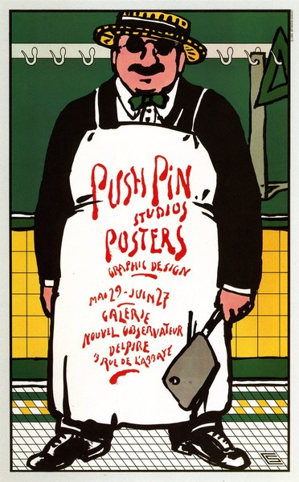
CRVI000819Seymour Chwast - Push Pin Butcher
Mixed media · 46 × 74 cm · 1981
Mixed media · 46 × 74 cm · 1981

CRVI000398Fingers Inc. - Another Side
Designer unknown · Jack Trax · 1988
Designer unknown · Jack Trax · 1988

CRVI000061Tom Cameron - Music To Wash Dishes By
Artwork by Tom Cameron · Bathing Records, Inc. · 1982
Artwork by Tom Cameron · Bathing Records, Inc. · 1982

CRVI000790Paul Rand - Golden Circle
IBM · Kauai Surf Hotel, Hawaii · 1981
IBM · Kauai Surf Hotel, Hawaii · 1981

CRVI000123Shigeo Fukuda - Jazz Festival Montreux
19e Festival de Jazz Montreux, 5–20 juillet 1985 · 100 x 70 cm · 1985
19e Festival de Jazz Montreux, 5–20 juillet 1985 · 100 x 70 cm · 1985

CRVI000821Seymour Chwast - Nicholas Nickleby
Mobil Showcase Network · 76 × 118 cm · 1983
Mobil Showcase Network · 76 × 118 cm · 1983
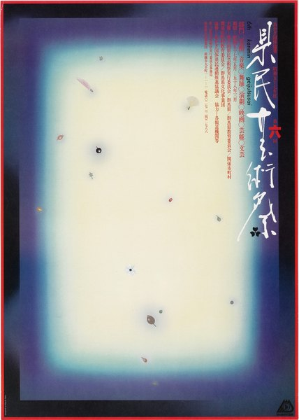
CRVI000128Koichi Sato - The 6th Iwaki Prefecture Art Festival
1982
1982
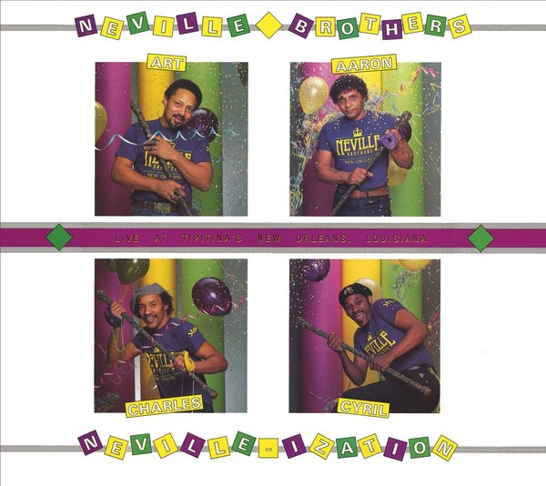
CRVI000370The Neville Brothers - Neville - Ization
Designer unknown · Black Top · 1984
Designer unknown · Black Top · 1984

CRVI000117Tadanori Yokoo - Are You Ready for Foods?
Advertisement for a Chinese restaurant · 1989
Advertisement for a Chinese restaurant · 1989
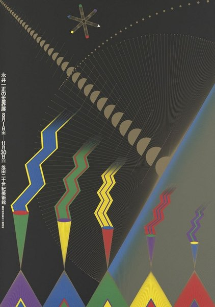
CRVI000162Kazumasa Nagai - The World of Kazumasa Nagai - Ikeda Museum of the 20th Century Art
Designed by Kazumasa Nagai · 1980
Designed by Kazumasa Nagai · 1980

CRVI000299The Residents - The Commercial Album
Designer unknown · Ralph · 1980
Designer unknown · Ralph · 1980

CRVI000161Kazumasa Nagai - Peace
Designed by Kazumasa Nagai · 1989
Designed by Kazumasa Nagai · 1989
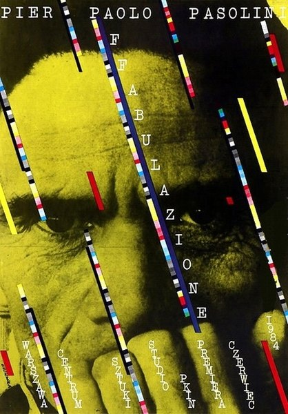
CRVI000264Enchantment of story-telling – Roman Cieślewicz - Affabulazione
Theatre Poster · 1984 · 1984
Theatre Poster · 1984 · 1984
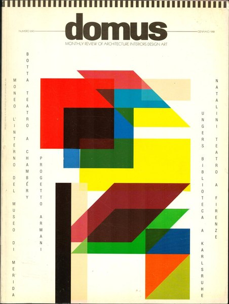
CRVI000844domus - domus 690
gennaio 1988 · 1988
gennaio 1988 · 1988

CRVI001054Takenobu Igarashi - Poster for the 15th Summer Jazz Festival
Poster · 1983
Poster · 1983
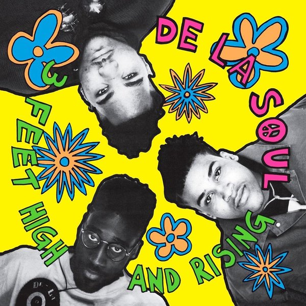
CRVI000418De La Soul - 3 Feet High And Rising
Designer unknown · Tommy Boy · 1989
Designer unknown · Tommy Boy · 1989
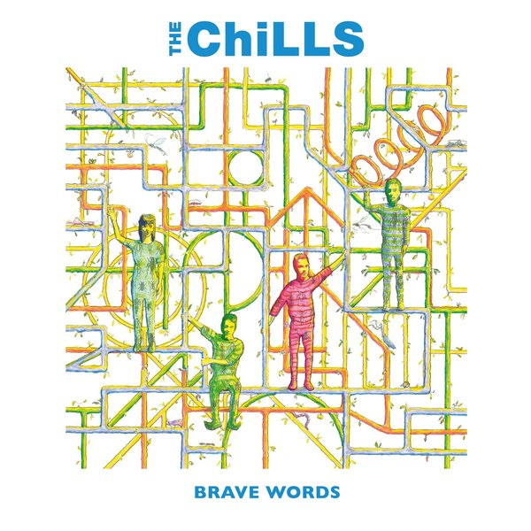
CRVI000428The Chills - Brave Words
Designer unknown · Flying Nun Records · 1987
Designer unknown · Flying Nun Records · 1987
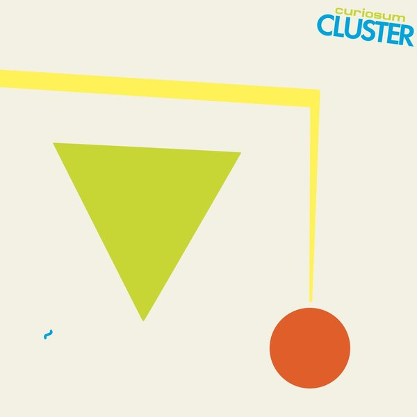
CRVI000011Cluster - Curiosum
Artwork by Dieter Moebius · Sky Records · 1981
Artwork by Dieter Moebius · Sky Records · 1981
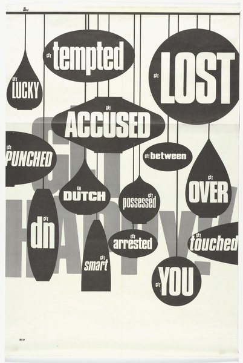
CRVI001351Barney Bubbles - Get Happy!! — promotional poster
Designed by Barney Bubbles · 1980
Designed by Barney Bubbles · 1980

CRVI000310Doris Norton - Artificial Intelligence
Designer unknown · Globo · 1985
Designer unknown · Globo · 1985
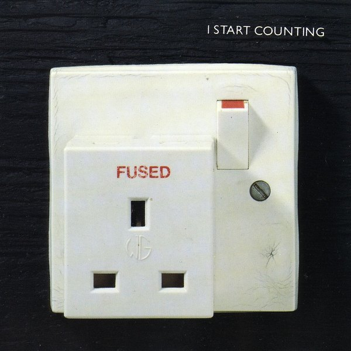
CRVI000300I Start Counting - Fused
Designer unknown · Mute · 1988
Designer unknown · Mute · 1988
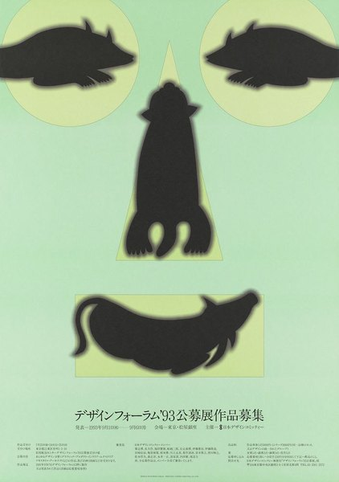
CRVI000156Kazumasa Nagai - Design Forum - Matsuya Ginza
Designed by Kazumasa Nagai · 1981
Designed by Kazumasa Nagai · 1981
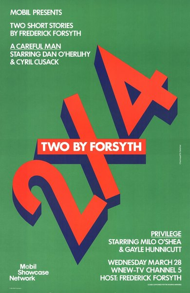
CRVI000773Ivan Chermayeff - Two by Forsyth
Offset lithograph · 117 × 76 cm · 1984
Offset lithograph · 117 × 76 cm · 1984
CRVI000021Negativland - A Big 10-8 Place
Designed by Ian Allen, Mark Hosler · Seeland · 1983
Designed by Ian Allen, Mark Hosler · Seeland · 1983

CRVI000306Haruomi Hosono - Philharmony
Designer unknown · Yen · 1982
Designer unknown · Yen · 1982

CRVI001111Rudy VanderLans - Emigre No. 5, Edizione Italo-Francese
Magazine cover · 43 × 29.1 cm, 30 pages · Emigre Inc., Berkeley · 1986
Magazine cover · 43 × 29.1 cm, 30 pages · Emigre Inc., Berkeley · 1986
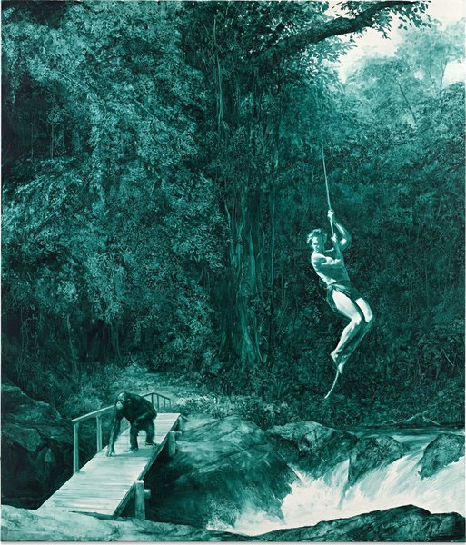
CRVI000808Mark Tansey - Nature’s Ape
Oil on canvas · 195.6 × 167.6 cm · 1984
Oil on canvas · 195.6 × 167.6 cm · 1984
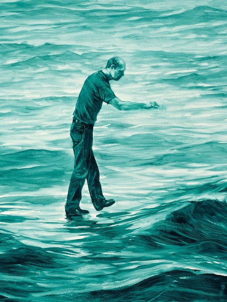
CRVI000806Mark Tansey - The Myth of Depth
Detail · oil on canvas, 99 × 226.1 cm · 1984
Detail · oil on canvas, 99 × 226.1 cm · 1984
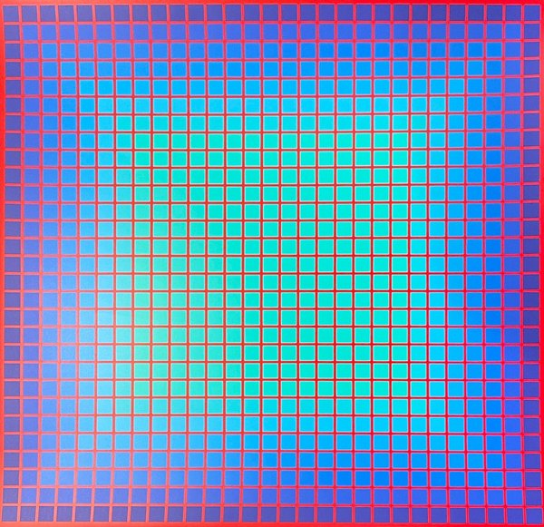
CRVI000859Julian Stanczak - Conferring Blue
Screenprint · 68.6 × 68.6 cm · 1981
Screenprint · 68.6 × 68.6 cm · 1981

CRVI000807Mark Tansey - Study for Action Painting II
Study · oil on canvas · 1985
Study · oil on canvas · 1985
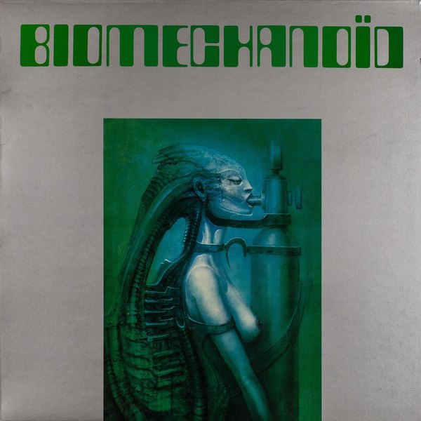
CRVI000381Joel Vandroogenbroeck, Mac Prindy & Marc Monsen - Biomechanoid
Designer unknown · Sofoursound Library · 1980
Designer unknown · Sofoursound Library · 1980
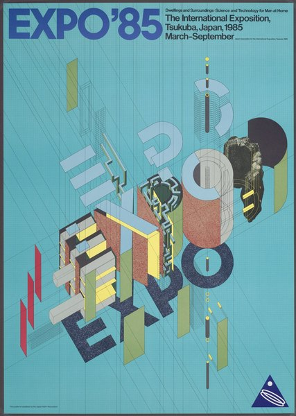
CRVI001049Takenobu Igarashi - EXPO '85 — The International Exposition, Tsukuba, Japan
Poster · The Museum of Modern Art, New York · 1985
Poster · The Museum of Modern Art, New York · 1985
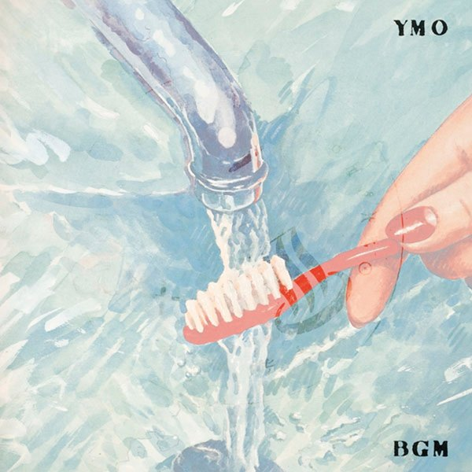
CRVI000305Yellow Magic Orchestra - BGM
Designer unknown · Alfa · 1981
Designer unknown · Alfa · 1981
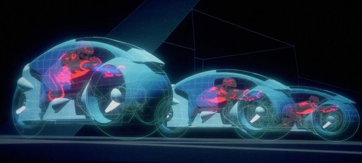
CRVI001325unattributed - Tron — light cycles, film still
Photographer unidentified · 1982
Photographer unidentified · 1982
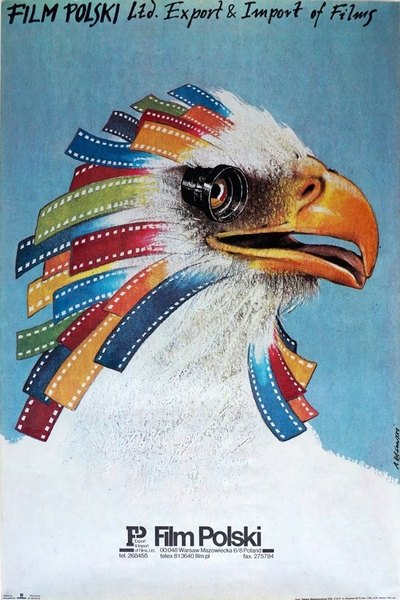
CRVI000276Andrzej Pągowski - Polish Film Ltd.
Film Poster · 1989 · 1989
Film Poster · 1989 · 1989
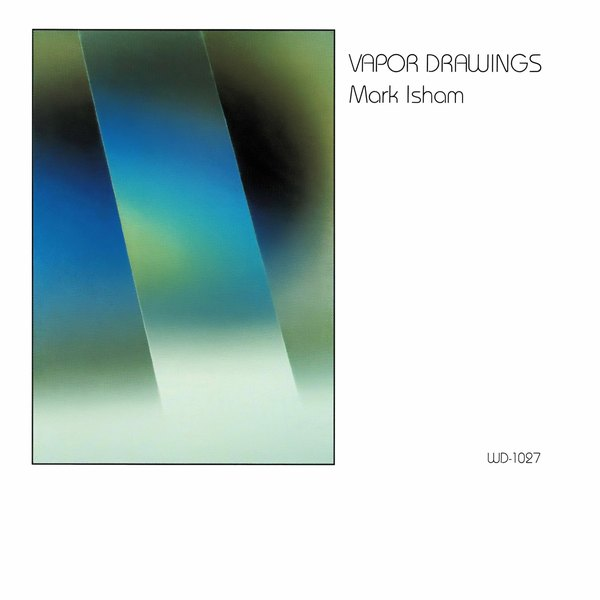
CRVI000384Mark Isham - Vapor Drawings
Designer unknown · Windham Hill · 1983
Designer unknown · Windham Hill · 1983
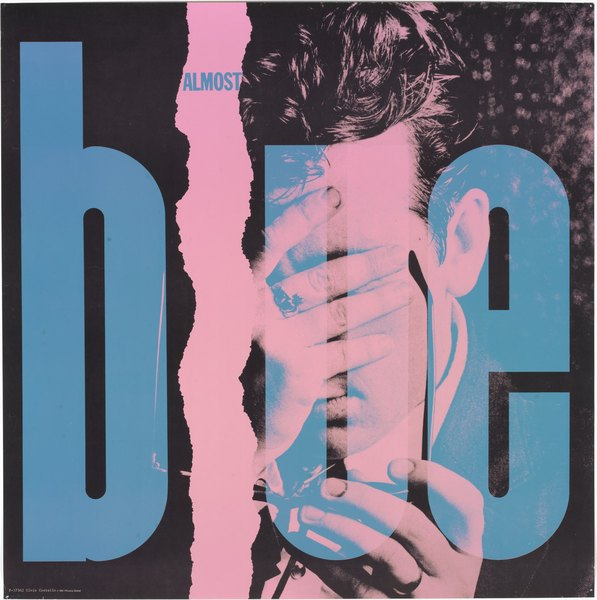
CRVI001350Elvis Costello & The Attractions - Almost Blue
Designed by Barney Bubbles, photograph by Keith Morris · F-Beat · 1981
Designed by Barney Bubbles, photograph by Keith Morris · F-Beat · 1981
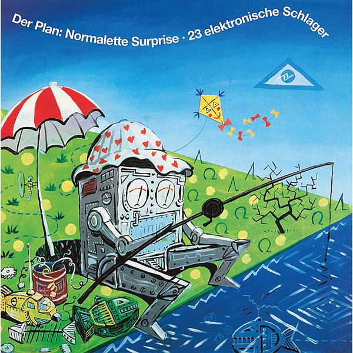
CRVI000307Der Plan - Normalette Surprise
Designer unknown · Ata Tak · 1981
Designer unknown · Ata Tak · 1981
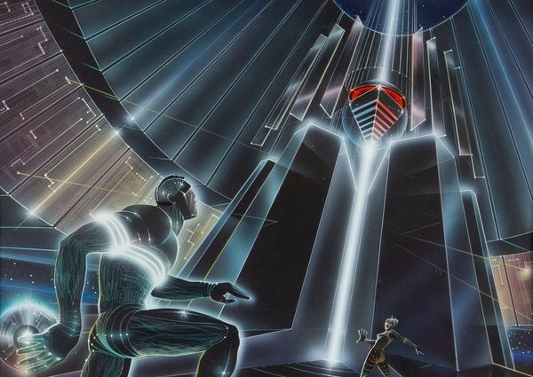
CRVI001347unattributed - Tron — concept art, the throne
Maker unidentified · 1982
Maker unidentified · 1982

CRVI000429Yeni Türkü - Akdeniz Akdeniz
Designer unknown · Goksoy Plakçlik · 1982
Designer unknown · Goksoy Plakçlik · 1982
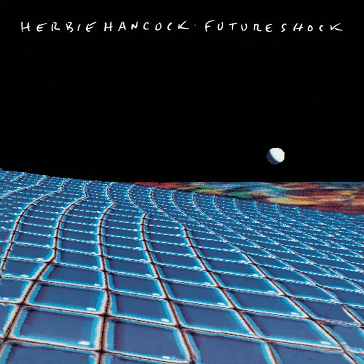
CRVI000365Herbie Hancock - Future Shock
Designer unknown · Columbia · 1983
Designer unknown · Columbia · 1983
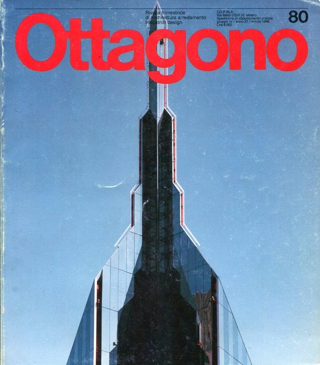
CRVI000842Ottagono - Ottagono 80
marzo 1986 · anno 21 · 1986
marzo 1986 · anno 21 · 1986
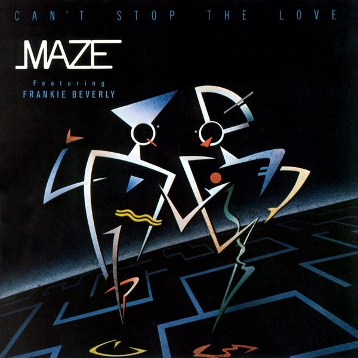
CRVI000372Maze featuring Frankie Beverly - Can't Stop the Love (2004 Remaster)
Designer unknown · Capitol · 1985
Designer unknown · Capitol · 1985
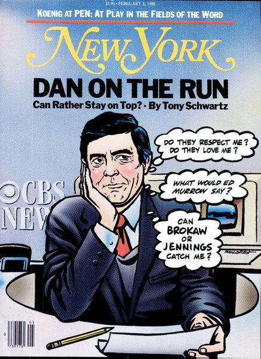
CRVI000604Unknown - Dan on the Run
New York, February 3, 1986 · 1986
New York, February 3, 1986 · 1986
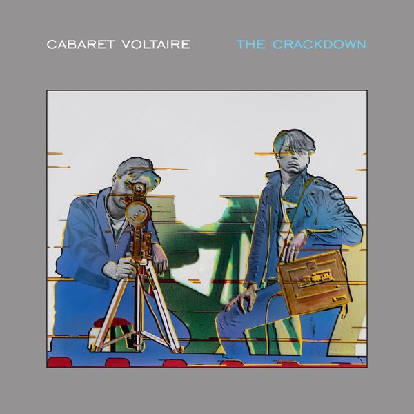
CRVI000093Cabaret Voltaire - The Crackdown
Designer unknown · Virgin · 1983
Designer unknown · Virgin · 1983
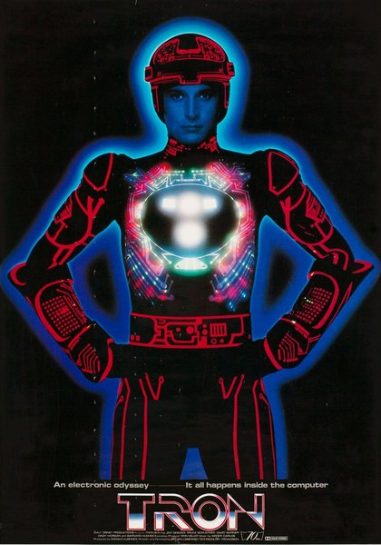
CRVI001326unattributed - Tron
Maker unidentified · 1982
Maker unidentified · 1982
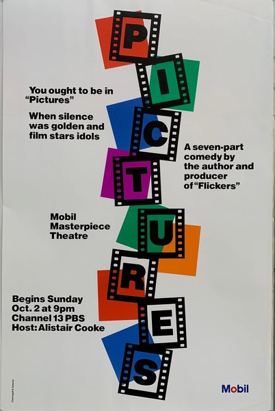
CRVI000771Chermayeff & Geismar - Pictures
Mobil Masterpiece Theatre · 1983
Mobil Masterpiece Theatre · 1983
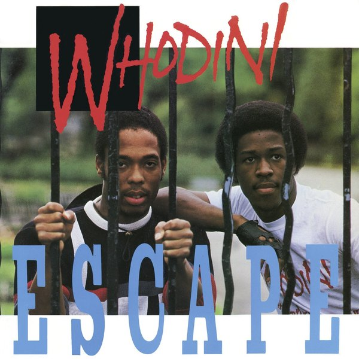
CRVI000409Whodini - Escape
Designer unknown · Jive · 1984
Designer unknown · Jive · 1984
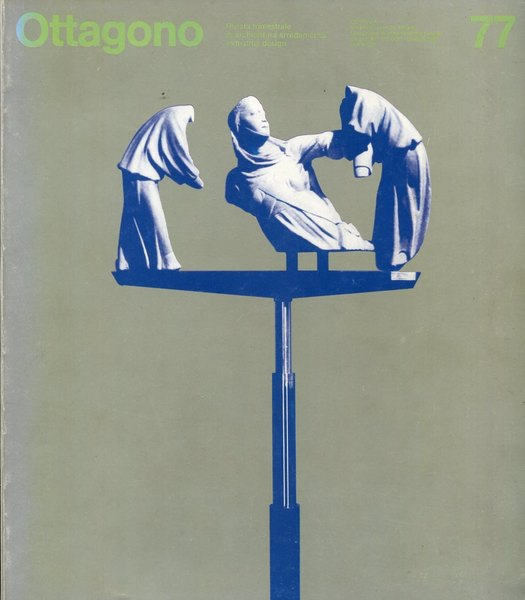
CRVI000839Ottagono - Ottagono 77
giugno 1985 · anno 20 · 1985
giugno 1985 · anno 20 · 1985
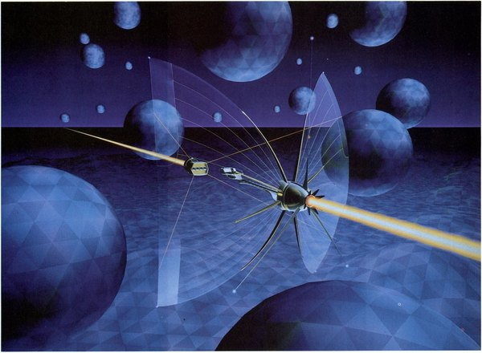
CRVI001327Peter Lloyd - Tron — concept art, the Solar Sailer
Illustration by Peter Lloyd · 1982
Illustration by Peter Lloyd · 1982
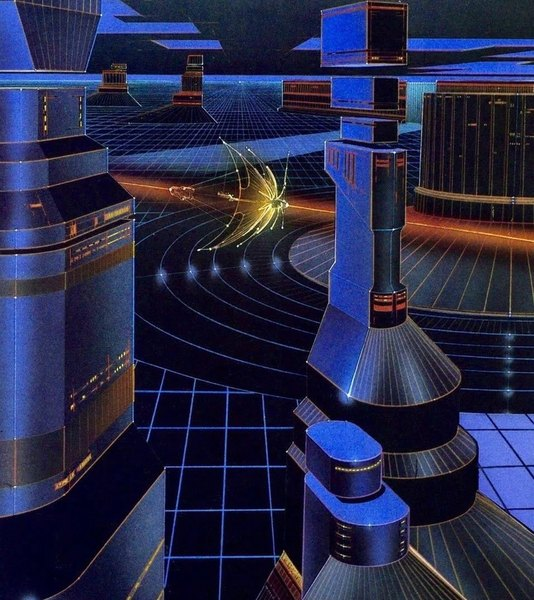
CRVI001324Peter Lloyd - Tron — concept art, city grid
Illustration by Peter Lloyd · 1982
Illustration by Peter Lloyd · 1982
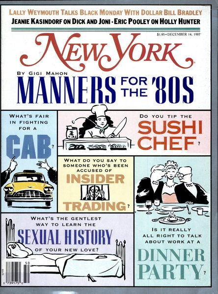
CRVI000606Unknown - Manners for the '80s
New York, December 14, 1987 · 1987
New York, December 14, 1987 · 1987
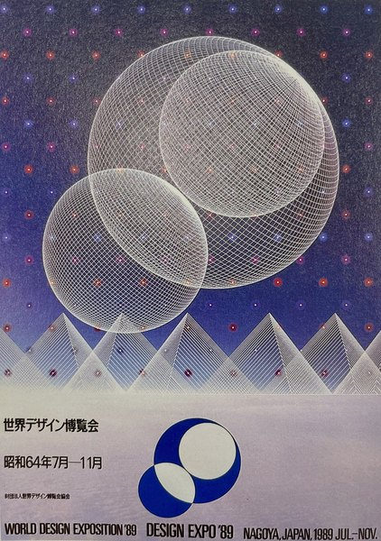
CRVI000163Kazumasa Nagai - World Design Expo '89 - Nagoya
Designed by Kazumasa Nagai · 1989
Designed by Kazumasa Nagai · 1989
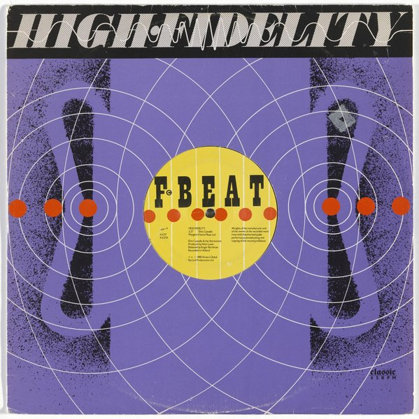
CRVI001353Elvis Costello & The Attractions - High Fidelity
Designed by Barney Bubbles · F-Beat · 1980
Designed by Barney Bubbles · F-Beat · 1980
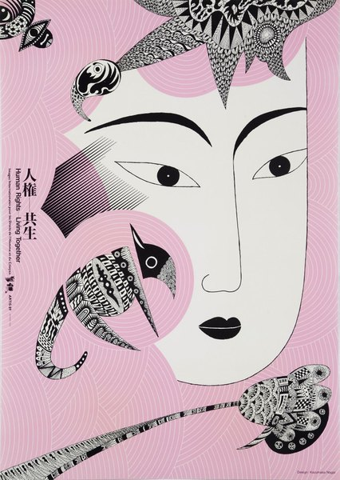
CRVI000158Kazumasa Nagai - Human Right - Living Together - Artis '89
Designed by Kazumasa Nagai · 1988
Designed by Kazumasa Nagai · 1988
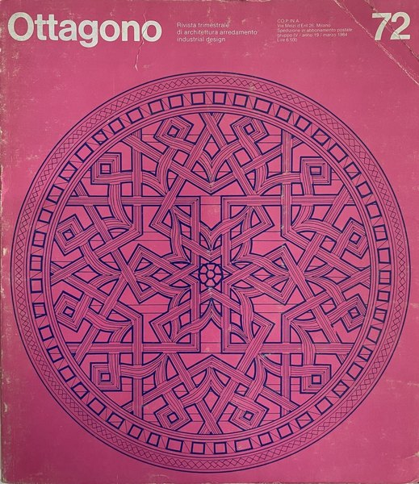
CRVI000836Ottagono - Ottagono 72
marzo 1984 · anno 19 · 1984
marzo 1984 · anno 19 · 1984

CRVI000387Conrad Schnitzler - Conal
Designer unknown · Uniton · 1981
Designer unknown · Uniton · 1981

CRVI000368Redd Hott - Redd Hott #1
Designer unknown · Venture · 1982
Designer unknown · Venture · 1982

CRVI000124Ikko Tanaka - Nihon Buyo
UCLA Asian Performing Arts Institute · Los Angeles, Washington D.C., New York · 1981
UCLA Asian Performing Arts Institute · Los Angeles, Washington D.C., New York · 1981

CRVI000277Andrzej Pągowski - State of Fear
Film Poster · 1989 · 1989
Film Poster · 1989 · 1989

CRVI000068Randomize - ¿Cómo se divertirán los insectos?
Designer unknown · Grabaciones Accidentales · 1980
Designer unknown · Grabaciones Accidentales · 1980

CRVI000275Andrzej Pągowski - 1901 Children on Strike
Film Poster · 1980 · 1980
Film Poster · 1980 · 1980

CRVI000308Palais Schaumburg - Palais Schaumburg
Designer unknown · Phonogram · 1981
Designer unknown · Phonogram · 1981

CRVI001040Kiyoshi Awazu - NOH — UCLA Asian Performing Arts Institute
Poster · The Museum of Modern Art, New York · 1981
Poster · The Museum of Modern Art, New York · 1981
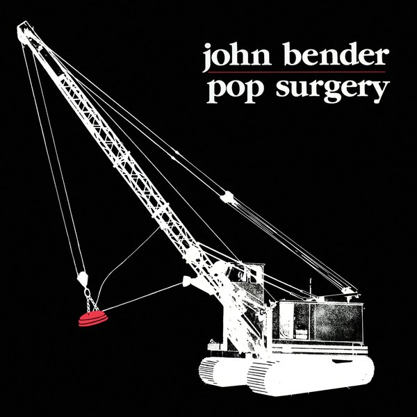
CRVI000044John Bender - Pop Surgery
Designed by Patrick Spenlau · Record Sluts · 1983
Designed by Patrick Spenlau · Record Sluts · 1983
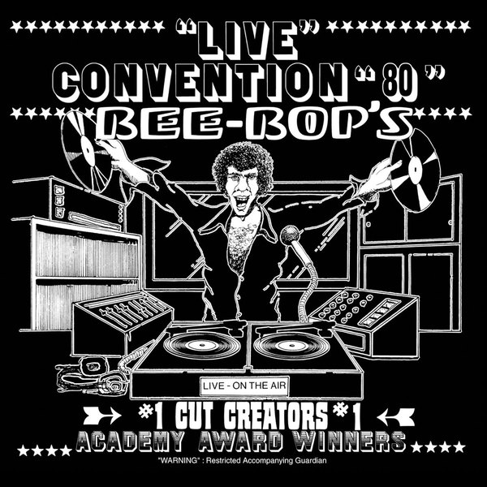
CRVI000407Various Artists - Live Convention "80"
Designer unknown · Disc-O-Wax · 1981
Designer unknown · Disc-O-Wax · 1981
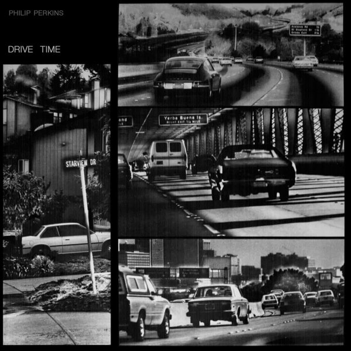
CRVI000018Philip Perkins - Drive Time
Designed by Guy Orcutt · Fun Music · 1985
Designed by Guy Orcutt · Fun Music · 1985
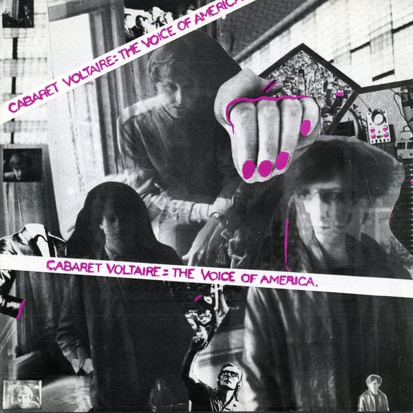
CRVI000304Cabaret Voltaire - The Voice Of America
Designer unknown · Rough Trade · 1980
Designer unknown · Rough Trade · 1980
CRVI000872Phil & The Blanks - Phil & The Blanks
Designed by Art Hotel, Christopher Whorf, Mac James, photograph by Alec R. Costandinos · Ibis ARC 12510 · 1980
Designed by Art Hotel, Christopher Whorf, Mac James, photograph by Alec R. Costandinos · Ibis ARC 12510 · 1980
CRVI001207Thelonious Monk - The Complete Riverside Recordings
Designer unrecorded · Riverside Records RCD-022-2 · 1986
Designer unrecorded · Riverside Records RCD-022-2 · 1986
CRVI000041Kevin Harrison - Inscrutably Obvious
Designed by Obvious Products · Obvious · 1981
Designed by Obvious Products · Obvious · 1981
CRVI000066Bourbonese Qualk - Hope
Designer unknown · Recloose Organisation · 1984
Designer unknown · Recloose Organisation · 1984
CRVI000803Joseph Beuys - Capri-Batterie
Kunstmuseum Bonn · photograph by Reni Hansen · 1985
Kunstmuseum Bonn · photograph by Reni Hansen · 1985
CRVI000181Shigeo Fukuda - Look 1
Exhibition · 103 x 73 cm offset · 1985
Exhibition · 103 x 73 cm offset · 1985
CRVI000309Mantronix - The Album
Designer unknown · Sleeping Bag · 1985
Designer unknown · Sleeping Bag · 1985
CRVI000014Bernard Bonnier - Casse‐tête
Designed by Eric Mattson · Amaryllis · 1984
Designed by Eric Mattson · Amaryllis · 1984
CRVI000087Tiziano Popoli, Marco Dalpane - Scorie
Designer unknown · Yaki Record · 1985
Designer unknown · Yaki Record · 1985